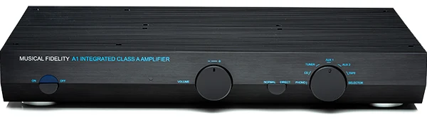
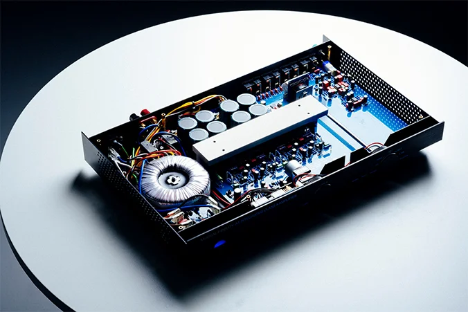
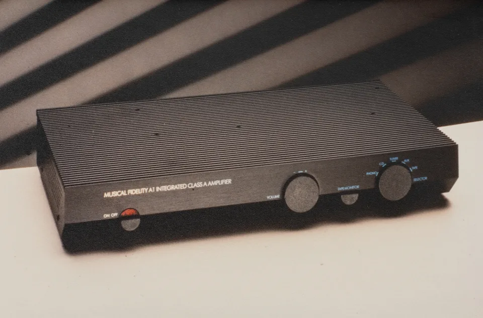

The Musical Fidelity A1: the class A integrated of 1985, made again
Checked on 2026-11-27 against the reviews of Stereophile, Hi-Fi News, StereoNET, What Hi-Fi?, The Ear and hi-fi+ (2023–2024), with Stereophile's and Hi-Fi News's measurements, Musical Fidelity's product page, information sheet and manual (2023), and Mark Hennessy's pages on the original.
In 1985 Musical Fidelity, a British firm three years old, launched the A1: a slim integrated amplifier of about 20 watts a channel, designed by Tim de Paravicini, biased into class A, and topped by one long ribbed heatsink. At £189 its rivals were the Cyrus Two and Naim's first NAIT, What Hi-Fi? recalls. It ran so hot that it made the headlines of the Daily Mirror, and early ones failed; but for Herb Reichert, in Stereophile, "it was the A1's all-natural sonics—not its top-plate temperature—that made it an instant classic". David Price, who has owned one for decades, calls it "about the nearest that most contemporary hi-fi buyers could get to a good valve amplifier". In 2023 Musical Fidelity, by then in Austrian hands, made it again on the original circuit, and Reichert's verdict was "a timeless classic, as good as it was, but better". Here is how the new one was heard, next to an original when the reviewer had one, what the measurements show, what to drive with it, how it is built, and the story of the first.


The A1 of 2023. Photo: Musical Fidelity.
How it sounds
I read six reviews of the new A1, all in English: Herb Reichert's in Stereophile (September 2024), with John Atkinson's measurements; Jamie Biesemans's in Hi-Fi News (February 2024), with Paul Miller's; David Price's for StereoNET (September 2023); What Hi-Fi?'s (August 2023), whose reviewers had a serviced A1 of 1985 on hand; Phil Wright's for The Ear (July 2024); and Ed Selley's for hi-fi+ (October 2024). Price owns an original, and What Hi-Fi? listened to both side by side. What Hi-Fi? gave it four stars, StereoNET its Applause award, and EISA named it its Enthusiasts Amplifier for 2024–2025. The six agree more than they differ.
- Warm, and close to valves. "Although calling the sound offered by the A1 'warm' might come over as lazy journalism, this reissued amplifier does deliver your music with a nearly tube-like, organic presentation," Biesemans writes. For Price it is "warm-sounding in tonal terms, to put it mildly", "a character amplifier", "one that is bought for its specially authored view of the recording", and not a class A in the manner of Sugden, "where the music is clinically precise and tonally neutral to a fault". What Hi-Fi? heard "more smoothness, warmth and physicality to the sound than is typically the fashion these days": "It could hardly be described as neutral but we like it anyway."
- The midrange. Against Pass Labs' INT-25, at $8,100, Reichert found the A1 less clean and less detailed, "but oh my, save me from the Devil, the A1 has that supersaturated toaster-glowing 'electrostatic midrange'". For Wright, "the midrange was just gorgeous".
- Treble. Wright found it "typically Class A, silky but not overly smooth. Like adding a knob of butter to a sauce"; it tamed the coarse edges of bright recordings, and "if you like your meat raw that may not be a good thing". Price played Supertramp's Oh Darling, mastered "sharp enough to blow your wig off via most amplifiers": Simaudio's MOON 250i and Naim's NAIT XS3 and NAIT 50 make it sound fierce, "and are right to do so"; the A1 renders it "in an exquisitely luxurious and silky way". Biesemans heard "some softness to the top-end, depending on the loudspeakers with which it's used", Selley "slightly rolled-off frequency extremes".
- Flow. Price: "a great sense of timing. Music just seems to flow along, demanding very little from the listener." Selley: "the key to what made the Musical Fidelity A1 such a favourite was its exceptionally unmechanical sense of power delivery, which is replicated perfectly in the new version". Even fed by a $250 Onkyo CD player, it played Monk "in an exceedingly natural, undigital, unmechanical, nontransistory way" for Reichert.
- Space. Reichert: "recordings presented like View-Master slides, with deep, conspicuously dimensional space and supersaturated color"; the Pass placed sounds more precisely, "but color was less saturated". What Hi-Fi? found "an expansive and nicely layered soundstage that stretches beyond our speakers", and Biesemans "huge width and depth". "Coloured and not entirely accurate the A1's presentation might be, but all is forgiven when it makes music so expansive and expressive," he concludes.
- Detail is not its strength. What Hi-Fi?: "newer rivals, even something much cheaper like Cambridge Audio's CXA81, manage to tell us more about the recording". Reichert found the Pass clearer "in the top two octaves" and more controlled "in the bottom three octaves". Wright's PrimaLuna EVO 300H, a £6,500 hybrid, "sounded better" across the board; but the A1 beat Musical Fidelity's own M2si, at £699, on detail and on the soundstage.
- Power is its limit. Price's torture track, Simple Minds' New Gold Dream, "has a super-strong bass guitar line that's hell for any amplifier under about 50W per channel", and the A1 struggled with it much as the NAIT 50 had. His advice: "unless you're running speakers in the 95dB and above sensitivity range – Klipschs, JBLs, etc. – then this amplifier really isn't gutsy enough for loud, dense rock music played at high volumes". What Hi-Fi? agrees that "more conventional rivals pull ahead when it comes to outright punch and attack", and Biesemans found the dynamics "a bit suppressed" when Sons of Kemet gave it their all. Not everyone reached the limit: The Cult's Big Neon Glitter "pounds along with a level of bite and attack" for Selley, and Reichert heard "an equal sense of limitless, strain-free headroom" from speakers of 83 dB and of 93 dB.
- The new against the old. Price: the 2023 A1 "retains the former's sugary-sweet tonality and lovely sense of timing", with bass "fractionally tighter" and a better-defined soundstage; "the downside is that the new A1 lacks a smidgeon of the original's euphony and charm, which is a polite way of saying that the 2023 amplifier is more neutral". His verdict: "better than the original in pretty much every respect". What Hi-Fi?, side by side: "considerably cleaner and clearer", the bass "tauter and more tuneful", and "all the original's charm remains undimmed".
- The phono stage. Among the integrated amplifiers Reichert has "owned, repaired, or reviewed", none had a moving-magnet stage that impressed him more. He sets it beside Rogue Audio's Sphinx V3 as "two of the most refined, rich, human-sounding phono stages ever included in a humbly priced integrated", the Sphinx being the more transparent; the moving-coil input suited a Hana Umami Blue (0.4 mV) better than a Denon DL-103. What Hi-Fi? found that it "isn't the most transparent we've heard but is pretty competitive for the money"; for Selley it is "realistically the best way to enjoy the performance".
What the measurements show
Atkinson for Stereophile and Miller for Hi-Fi News both found more power than the 25 W rated, much less into 4 ohms, and distortion that is mostly second harmonic.
- Power. At 1 % distortion, 30 W a channel into 8 ohms and 16 W into 4 ohms for Atkinson, 34 W and 18 W for Miller, who reached 30 W into 4 ohms at 3 %. Musical Fidelity gives no figure for 4 ohms. Atkinson: "It will work best with loudspeakers whose impedance remains above 4 ohms".
- How much of it is class A. Musical Fidelity says "25W Pure Class A power". Miller works it out from the bias current, about 0.8 A, at "roughly 10W/8ohm per channel", beyond which the amplifier slides into class AB. He had found the same of the original when he tested it in 1987: "a true Class A rating closer to 10W than 20W/8ohm".
- Distortion. It rises with power, from 0.026 % at 1 W to 0.14 % at 10 W and 0.27 % at 25 W (Miller): "While this is 'high' for a typical transistor amp, the harmonics are simple second-order and – more important still – are very uniform with frequency." Atkinson calls the second harmonic "subjectively benign".
- Output impedance. The specified damping factor of 150 "suggests an output impedance of about 0.05 ohms", Reichert notes. Miller measured 0.33 ohm and Atkinson 0.5 ohm, enough to tilt the response by ±0.4 dB with a load that behaves like a loudspeaker.
- Noise. Some hum from the power supply shows in both labs' results: "a hint of 'warming' hum punching through the A-weighting curve", Miller writes.
- The phono stage. Atkinson ends on "the excellent phono stage, which offers low noise and distortion and high overload margins in both MM and MC modes". His sample's MC input measured about 18 kΩ at 1 kHz, not the 1 kΩ specified, and its RIAA response rose by 2 dB at 10 Hz.
- A faulty sample. On Atkinson's A1 the left channel stayed silent when he switched from Direct to Normal, until he had pressed the button in and out several times, and the right channel distorted with the volume at maximum. He assumed this was "specific to the review sample". Miller reports nothing of the kind.
What to drive with it
- Speakers: easier than its watts suggest. Musical Fidelity's information sheet aims it at "small to mid-sized rooms, carefully set up with a pair of great two-way speakers". Simon Quarry, the engineer who remade it, had thought it needed speakers of 89 dB or more. "But I was proven wrong." Musical Fidelity's own LS3/5A, at 82 dB, "partnered excellently", and the pair "filled the large and loud listening room at the Munich High End Show with no real problem". What Hi-Fi? tried the same speakers: "surprisingly well", the A1 staying "surprisingly listenable even as its dynamics compress". Reichert drove GoldenEar's BRX, a hard load by Stereophile's measurements, "loud (90dB average at 2m), bell-clear, and liquid-smooth with no noticeable strain". For loud rock, Price's 95 dB stands.
- Pairings the reviewers liked. Klipsch's RP-600M II, at $499 a pair, "an instant smash hit" for Reichert; the Falcon LS3/5a and the DeVore Fidelity O/93, his own; MoFi's SourcePoint 8, "an ideal partner" for Wright, who had first heard the A1 driving Klipsch Cornwalls at the distributor's; Neat's Petite Classic, 87 dB and 6 ohms, "an unadulterated joy" for Selley, and DeVore's O/Baby; Monitor Audio's Platinum 100 3G and DALI's Rubicon 2 for Biesemans; Cambridge Audio's Aeromax 6, of 90 dB, for Price.
- Direct mode, with a modern source. A DAC or a network player puts out 2 V or more, and the A1's gain was set in the 1980s. The Direct button bypasses the gain stage ahead of the volume control and lowers the gain by about 10 dB: 24.1 dB against 35.7 dB by Miller's measurement, still full power from 885 mV. The volume control then works over more of its travel. "Few brands take advantage of the high 2V+ output of modern line-level sources," Miller writes. Price ran a Chord Hugo TT2 into it in Direct, which "gave the best results"; for Reichert it sounded "more textural and tactile and possibly more transparent—but also less gain-fired bold", for What Hi-Fi? it brought "small benefits in overall transparency". With his Falcons it moved Reichert's listening level from 10 o'clock to between 11 and 1, "more ideal (for a log pot)".
- Its pre-amplifier alone. Through the Pre Out into a First Watt SIT-4 power amplifier, Reichert found the A1's pre-amplifier "at least 90% as transparent" as HoloAudio's Serene, his reference, and concluded that "the A1's signature boldness and tactility are spawned largely in the preamp section".
- What it does not have. No digital input, no Bluetooth, no balanced input, no headphone socket. The manual suggests a headphone amplifier on the fixed Tape Out; the Pre Out feeds a power amplifier or a subwoofer.
Living with it
- The heat. "The whole top of the A1 is a heat sink," the manual warns: 55 to 65 °C in a room at 20 °C, about the heat of "a 75 watt light bulb". The reviewers measured 59 °C after an hour (Atkinson), 60 °C (Reichert, Selley), 63 °C at idle (Miller), and "just short of 73°C" (Wright), "more than the 70°C needed to cook an egg properly". It cools as it plays: about 40 °C after half an hour at 10 W a channel, Miller found, the current going to the speakers instead of the heatsink.
- Its place. At least 50 mm clear behind and 250 mm above, and nothing on top, ever (manual). Selley set his Chord Qutest beside it, "rather than being gradually baked on the top".
- What it draws. 92 W at idle and 100 W at full output, Miller measured, 130 W at most by Musical Fidelity's figures: a class A amplifier draws the most when it plays nothing. Wright reckoned it cost him "3-4 pence per hour".
- Switching on. The speakers must be connected first, and the volume at zero (manual).
- The phono input. A push button at the back sets MM or MC: MC for cartridges from under 100 µV to about 800 µV, MM above that, and a high-output MC on whichever sounds better. Switch it only with the volume down or another input selected, as it sits "at the beginning of an amplification chain of more than 80dB". An external phono stage goes into a line input, never into Phono (manual).
- The remote. Volume and mute only, and mute only from the remote. It turns a motorised ALPS potentiometer that can be heard doing so: "a loudish motor" for Biesemans, "a graunching noise" for Wright, who soon "found myself missing the quirk with other amplifiers".
How it is built
- The circuit. Discrete and symmetrical, "top-and-bottom" as Quarry puts it, with two output transistors a channel bolted to an alloy block under the top plate. It is biased into class A and, in Musical Fidelity's words, "slides (NOT switches)" into class B when the music asks for more current than the standing current, so that "speakers that dip in impedance are still allowed yet more output current if required" (Quarry).
- What changed in 2023. The brief, Quarry told What Hi-Fi?, "was to remake the original with as few changes as possible". The main capacitors are now rated for the heat, the output transistors are newer, the signal-path capacitors polypropylene and the resistors metal film; the transformer has a winding for each channel, and each channel twice the supply capacity. The case grew from 408 to 440 mm wide (Mark Hennessy, Quarry), with vents in its sides, and the alloy block is now fixed to the chassis as well as bonded to the top plate: in the earliest A1s it was "simply held in place on the PCB by the transistors' legs", Miller writes. Quarry could bias it "a bit higher than some of the later originals". The tape monitor button became the Direct switch, and a motorised ALPS RK potentiometer made the remote possible.
- Not quite the original pre-amplifier. Musical Fidelity's page says the pre-amplifier "is the same as the original 1985 design". Not entirely, Quarry told What Hi-Fi?: the original's active volume control, which amplified the mismatch between the two tracks of its potentiometer, "was deemed problematic … so it was abandoned for conventional volume control". Hennessy, who has serviced and documented the original, had deduced as much from the new product page and manual.
- The phono stage. Its first stage works in current mode. For moving coil, Heinz Lichtenegger, Musical Fidelity's owner, explained to Reichert, "we switch the transistor's emitter resistor to a lower one", which raises the gain to 60 dB and lowers the input resistance to about 1 kΩ at once.
- Made in Taiwan, by Stereophile's specifications.
- Is it really class A? The argument is as old as the A1. Hennessy measured a standing current of 700 mA on his A1 of 1990, which by the usual sums gives "almost exactly 8 watts of class A operation into 8Ω"; Dave Berriman found 0.71 A on a Mark 3 for Hi-Fi News in January 1994, "enough for up to about 8W of pure Class A". De Paravicini disagreed: "the two halves of the circuit are additive", he told Hennessy, and as proof the heatsink cooled by more than 10 degrees at full output. Musical Fidelity itself, Hennessy notes, always said "strongly biased into class A" — "apart from the lettering on the front panel (!)".


An A1 of 2023 without its top plate, which is its heatsink: the transformer, the reservoir capacitors, and across the middle the alloy block the output transistors are bolted to. Photo: Musical Fidelity.
The original A1
Antony Michaelson, a clarinettist, founded Musical Fidelity in 1982 after leaving Michaelson & Austin, which had sold Tim de Paravicini's EL34 valve amplifiers in the late 1970s. De Paravicini had designed for Luxman in Japan from 1972, then founded EAR in England in 1977. The A1 was not Musical Fidelity's first amplifier: a pre-amplifier, a power amplifier and a dearer integrated came before it (What Hi-Fi?). De Paravicini "spent two years developing a prototype", he told Price, and Michaelson had a British industrial design firm engineer it for production. It came out in 1985; 1984 by some accounts, Hennessy's and The Ear's among them.
Its rivals ran cooler: the Cyrus Two and the NAIT at its price (What Hi-Fi?), and for Reichert "Audiolab's 8000A, Creek's 4040, A&R Cambridge's A60, and NAD's 3020". De Paravicini had designed it to run at 65 °C on the heatsink, Price writes, "and it's true, the healthy ones do. It's just that ageing components, dust and sub-optimal placement soon conspire to make mayhem." Its electrolytic capacitors were rated for 85 °C rather than 105 °C (What Hi-Fi?, Hennessy), and on his own A1 Hennessy found the heatsink compound covering only 10 to 20 % of the joint between the transistors' block and the top plate, a lack of quality control he believes "has been the cause of many premature failures". In 1989 Reichert bought a pair of LS3/5As from a man who had driven them with an A1, and who showed him his banana plugs, "partially melted from the A1's heat".
How it sounds today, by What Hi-Fi?, on a serviced sample of 1985: "a determinedly smooth, full-bodied balance that is likeable but not particularly accurate", detail "broadly on a par with a decent budget amplifier of today", bass "weighty" but "pretty soft and lacks grip"; and yet "a physical presence that most amplifiers, be they budget or mid-priced, still lack today". "Some reviews of the time suggested that it sounded a lot like a valve amplifier, and we can understand those sentiments." I found no review from its day to read online.


An original A1 in a Musical Fidelity press photograph of the 1980s. Photo: Musical Fidelity; the print was photographed by What Hi-Fi?.
It changed as it went, by Hennessy's account. The earliest have no vents in their sides and a top in two parts; by 1990 the Mark II had a one-piece top, vented sides and radial reservoir capacitors; a Mark 3 then rose to 25 W. In parts of Europe it was sold as the A1-X, and in Germany a tuned version as the David. In 1991 came two limited editions with an external power supply: the Collectors Edition, of which 24 are said to have been made, and the Final Edition, 200 of them, which is in fact a B200, a different circuit with MOSFET outputs and 40 W. The A1 was made until the early 1990s; it listed at £300 in the summer of 1991.
The A1 of 2008 shares only the name and the look: a different circuit, a USB DAC, an LCD display, a moving-magnet input only. Miller measured "2x40W/8ohm and 2x65W/4ohm but not in Class A", and calls it "an aberration"; for Price it was "short-lived" and "bore scant resemblance to the 1985 original".
Michaelson retired in 2018 and sold the brand to Heinz Lichtenegger's Audio Tuning, the Austrian parent of Pro-Ject. The A1 had been "one of his first major successes as a budding distributor in Austria", Quarry says, and bringing it back fulfilled "one of his hi-fi dreams". De Paravicini died on 17 December 2020. Quarry, who had joined Musical Fidelity in 2001, was sent "an old, battered A1", repaired it to the original specification, and used it as his guide.
Tim de Paravicini — goes to Japan to design for Luxman
EAR — founded by de Paravicini in England
Musical Fidelity — founded by Antony Michaelson
A1 — £189, designed by de Paravicini
Hi-Fi News's test — by Paul Miller: “closer to 10W than 20W” in class A
A1 Mark II — on Hennessy's A1 of that year: one-piece top, vented sides; then a Mark 3 of 25 W
Collectors Edition and Final Edition — the last A1s, with an external supply
A new A1 — the look only, not class A
Audio Tuning — Heinz Lichtenegger buys Musical Fidelity
Tim de Paravicini — dies on 17 December
A1 — the original circuit, remade by Simon Quarry
EISA Enthusiasts Amplifier — for 2024–2025
Buying one
- New. £1,499 from Henley Audio, the British distributor, on 2026-11-27. It was launched at £1,499, €1,599 and $1,699 (What Hi-Fi?, 2023-08-04) and cost $1,779 in the United States in 2024, with a five-year warranty there (Stereophile). Black only.
- An original. "If you are feeling a little brave you can still pick up an early one for not much money. It will likely give you plenty of enjoyment provided you are willing to put up with its quirks," What Hi-Fi? writes. Things to know, from Hennessy's service notes: the 85 °C electrolytic capacitors; the heatsink compound between the transistors' block and the top plate, to be renewed whenever that joint is opened; and the top plate itself, without which the amplifier cannot run for more than a few seconds. The Final Edition is a different amplifier, and so is the A1 of 2008.
The facts
| A1 (2023) | |
|---|---|
| Type | Integrated, transistors; discrete, symmetrical; class A sliding into class B |
| Power | 25 W into 8 ohms; measured 30 and 34 W, and 16 and 18 W into 4 ohms, at 1 % |
| Class A | 25 W by Musical Fidelity; about 10 W by Hi-Fi News's reckoning from the bias |
| Output impedance | Damping factor 150 specified; 0.33 and 0.5 ohm measured |
| Gain | 42 dB Normal, 32 dB Direct; 35.7 and 24.1 dB measured (Hi-Fi News) |
| Line inputs | Five, RCA; 25 kΩ specified, 6.8 kΩ measured at 1 kHz (Stereophile) |
| Phono | MM (5 mV, 50 kΩ, 100 pF, 40 dB) or MC (450 µV, 1 kΩ, 60 dB) |
| Outputs | Tape Out (fixed), Pre Out (variable), one pair of speaker terminals |
| Remote | Volume and mute |
| Power drawn | 130 W at most; 92 W idle, 100 W at full output measured (Hi-Fi News) |
| Size, weight | 440 × 68.3 × 283.3 mm; 10.5 kg |
| Made | Taiwan (Stereophile) |
| Price | £1,499 (Henley Audio, 2026); £1,499, €1,599 and $1,699 at launch in 2023 |
Sources
- Stereophile: Herb Reichert, "Musical Fidelity A1 integrated amplifier", 2024-09-27, with page 2, the specifications and John Atkinson's measurements; Jonathan Scull and John Atkinson, "Tim de Paravicini, RIP", 2020-12-18.
- Hi-Fi News: Jamie Biesemans, "Musical Fidelity A1 Integrated Amplifier", 2024-02-19, with page 2, and Paul Miller's "A Class Act" and lab report.
- StereoNET: David Price, "Musical Fidelity A1 (2023) Integrated Amplifier Review", 2023-09-10.
- What Hi-Fi?: "Musical Fidelity A1 review", 2023-08-10; Ketan Bharadia, "That Was Then... Musical Fidelity A1 (1985)", 2023-08-11, with the photograph of the original, and "We speak to the designer behind the new Musical Fidelity A1 amplifier", 2023-08-10, Simon Quarry's interview; "Musical Fidelity's revived A1 amplifier is official", 2023-08-04, with the launch prices.
- The Ear: Phil Wright, "Musical Fidelity A1, hotter than July", 2024-07-31.
- hi-fi+: Ed Selley, "Musical Fidelity A1 integrated amplifier", 2024-10-22.
- Musical Fidelity: the A1 page, its information sheet and manual, 4th issue, 2023-09-19, all read on 2026-11-27; "A1 wins EISA Award 2024", 2024-08-15.
- Henley Audio, the A1 page, with its price, read on 2026-11-27.
- Mark Hennessy, the original A1's introduction, technical notes and related models, read on 2026-11-27.
- Wikipedia, "Musical Fidelity", for the firm's founding.
- The photographs: Musical Fidelity, from the A1's page; the original's, a Musical Fidelity press photograph, in the copy What Hi-Fi? published with "That Was Then...".